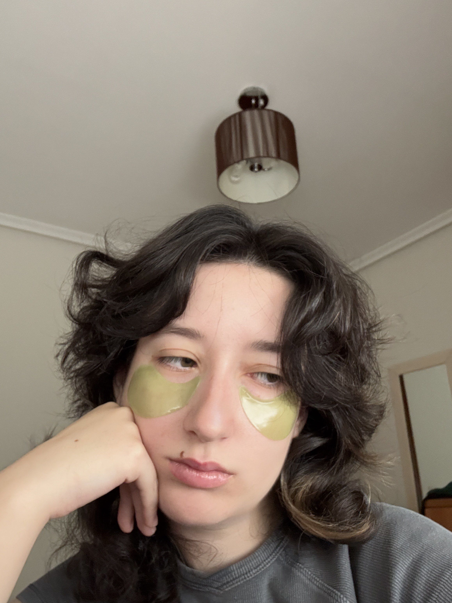

| Nombre: Alba | Apellidos: Naya Costa |
| Contacto: wolfd1288@gmail.com | |

Actualmente dedico mi tiempo a la guitarra, asistiendo a clases en un Grado Superior de DAM (Desarrollo de Aplicaciones Multiplataforma) y jugando videojuegos. Otras de mis aficiones es el deporte (fútbol y baloncesto) y el dibujo.
Aquí puedes ver el canal de youtube de la orquesta de guitarras en la que participo como concertista: Orquesta de Guitarras de Albacete.